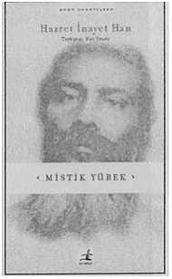

İnsanlar bir mistiğin bir hayalci, dünyevi meseleler hakkında hiçbir şey bilmeyen, pratik olmayan bir insan olduğunu düşünürler. Fakat ben böyle bir mistiğe sadece yarı mistik derim. Tam anlamıyla mistik olan kişinin dengesi vardır; ruhsal şeylerde olduğu kadar dünyevi konularda da akıllı olmalıdır, insanların bir mistiğin ne olduğuna dair pek çok yanlış anlayışı vardır. Bir falcıya da mistik derler, bir medyuma, bir kahine de mistik derler. Bir mistiğin bu niteliklere sahip olmadığını söylemek istemiyorum, fakat bu nitelikler bir insanı mistik yapmaz. Gerçek bir mistik esinlenmiş bir sanatkar, mükemmel bir bilim adamı, etkili bir devlet adamı olmalıdır. O da iş, endüstri, toplumsal ve politik yaşam konusunda maddeci zihinli insan kadar nitelik sahibi olmalıdır, insanlar bana, ‘Sen bir mistiksin, şuna buna aldırmayacağını sanırdım’ dediklerinde hoşuma gitmiyor. Neden aldırmayayım? Her küçük detaya dikkat ederim, fakat her küçük detay başka hiçbir şeye dikkat etmeyeceğim kadar zihnimi meşgul etmez. Tanrının bilincinde olurken dünyanın bilincinde olmamak gerekmez, iki gözümüzle tek manzara görürüz; onun için her iki yönü de, Tanrıyı da dünyayı da, aynı zamanda net bir görüş olarak görmeliyiz. Bu zordur, ama imkansız değildir.